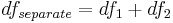

Die X-Funktion fitcmpdata (aufrufbar durch Wählen von Analyse: Anpassen: Datensätze vergleichen) kann zum Vergleichen zweier Datensätze verwendet werden, die mit der gleichen Funktion angepasst wurden. Diese X-Funktion verwendet einen F-Test, um festzustellen, ob sich die beiden Datensätze signifikant voneinander unterscheiden.
Die Hilfsmittel zum Anpassungsvergleich berechnen das Ergebnis nicht direkt aus den Datensätzen. Sie verwenden die Fit-Berichtsdatenblätter als Eingabe. Mit anderen Worten, um zwei Datensätze zu vergleichen, sollten Sie zunächst die beiden Datensätze mit einem Modell unabhängig voneinander anpassen und anschließend die Berichtsdatenblätter als Eingabe für die X-Funktion auswählen. Zum Vergleich der beiden Datensätze werden einige Anpassungsergebnisse nach dem folgendem Algorithmus verwendet:
Angenommen die Restsummen der Quadrate und die Freiheitsgrade der beiden Fit-Ergebnisse sind RSS1, RSS2, df1, df2. Dann haben wir:

Wir können die beiden Datensätze miteinander kombinieren (indem eine an die andere angehängt wird) und dann eine Anpassung für den kombinierten Datensatz mit der gleichen Funktion durchführen und die Summe der Fehlerquadrate und die Freiheitsgrade berechnen, die als SSRcombined und dfcombined bezeichnet werden. Anschließend können wir den F-Wert wie folgt berechnen:
Nachdem der F-Wert bestimmt wurde, berechnet Origin den p-Wert nach folgender Formel:
Dieser p-Wert ist die Basis für die Entscheidung darüber, ob die beiden Datensätze (nicht die Parameterwerte) signifikant unterschiedlich sind oder nicht. Wenn der p-Wert größer als 0,05 ist, können wir mit einem Konfidenzlevel von 95% sagen, dass die Daten nicht signifikant unterschiedlich sind.
Beachten Sie, dass das Anpassungsvergleichsmodell die Werte von RSS, SSE, df und N benötigt. Stellen Sie sicher, dass diese Ergebnisse ausgegeben werden, wenn Sie eine Anpassung mit Automatischer oder Manueller Neuberechnung durchführen.